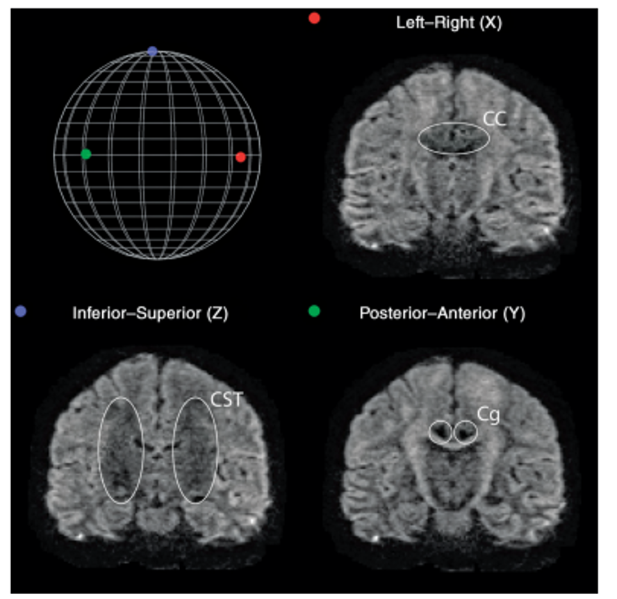

Introduction to Diffusion MRI data
Last updated on 2024-02-29 | Edit this page
Overview
Questions
- How is dMRI data represented?
- What is diffusion weighting?
Objectives
- Representation of diffusion data and associated gradients
- Learn about diffusion gradients
Diffusion Weighted Imaging (DWI)
Diffusion MRI is a popular technique to study the brain’s white matter. To do so, MRI sequences which are sensitive to the random, microscropic motion (i.e. diffusion) of water protons are used. The diffusion of water within biological structures, such as the brain, are often restricted due to barriers (e.g. cell membranes), resulting in a preferred direction of diffusion (anisotropy). A typical diffusion MRI scan will acquire multiple volumes with varying magnetic fields (i.e. diffusion gradients) which are sensitive to diffusion along a particular direction and result in diffusion-weighted images (DWI). Water diffusion that is occurring along the same direction as the diffusion gradient results in an attenuated signal. Images with no diffusion weighting (i.e. no diffusion gradient) are also acquired as part of the acquisition protocol. With further processing (to be discussed later in the lesson), the acquired images can provide measurements which are related to the microscopic properties of brain tissue. DWI has been used extensively to diagnose stroke, assess white matter damage in many different kinds of diseases, provide insights into the white matter connectivity, and much more!

Diffusion along X, Y, and Z directions. The signal in the left/right
oriented corpus callosum is lowest when measured along X, while the
signal in the inferior/superior oriented corticospinal tract is lowest
when measured along Z.
b-values & b-vectors
In addition to the acquired diffusion images, two files are collected
as part of the diffusion dataset, known as the b-vectors and b-values.
The b-value (file suffix .bval) is the
diffusion-sensitizing factor, and reflects the timing and strength of
the diffusion gradients. A larger b-value means our DWI signal will be
more sensitive to the diffusion of water. The b-vector (file suffix
.bvec) corresponds to the direction with which diffusion
was measured. Together, these two files define the diffusion MRI
measurement as a set of gradient directions and corresponding
amplitudes, and are necessary to calculate useful measures of the
microscopic properties. The DWI acquisition process is thus:
- Pick a direction to measure diffusion along (i.e. pick the diffusion
gradient direction). This is recorded in the
.bvecfile. - Pick a strength of the magnetic gradient. This is recorded in the
.bvalfile. - Acquire the MRI with these settings to examine water diffusion along the chosen direction. This is the DWI volume.
- Thus, for every DWI volume we have an associated b-value and b-vector which tells us how we measured the diffusion.
Dataset
For the rest of this lesson, we will make use of a subset of a publicly available dataset, ds000221, originally hosted at openneuro.org. The dataset is structured according to the Brain Imaging Data Structure (BIDS). Please check the BIDS-dMRI Setup page to download the dataset.
Below is a tree diagram showing the folder structure of a single MR
subject and session within ds000221. This was obtained by using the bash
command tree.
OUTPUT
../data/ds000221
├── .bidsignore
├── CHANGES
├── dataset_description.json
├── participants.tsv
├── README
├── derivatives/
├── sub-010001/
└── sub-010002/
├── ses-01/
│ ├── anat
│ │ ├── sub-010002_ses-01_acq-lowres_FLAIR.json
│ │ ├── sub-010002_ses-01_acq-lowres_FLAIR.nii.gz
│ │ ├── sub-010002_ses-01_acq-mp2rage_defacemask.nii.gz
│ │ ├── sub-010002_ses-01_acq-mp2rage_T1map.nii.gz
│ │ ├── sub-010002_ses-01_acq-mp2rage_T1w.nii.gz
│ │ ├── sub-010002_ses-01_inv-1_mp2rage.json
│ │ ├── sub-010002_ses-01_inv-1_mp2rage.nii.gz
│ │ ├── sub-010002_ses-01_inv-2_mp2rage.json
│ │ ├── sub-010002_ses-01_inv-2_mp2rage.nii.gz
│ │ ├── sub-010002_ses-01_T2w.json
│ │ └── sub-010002_ses-01_T2w.nii.gz
│ ├── dwi
│ │ ├── sub-010002_ses-01_dwi.bval
│ │ │── sub-010002_ses-01_dwi.bvec
│ │ │── sub-010002_ses-01_dwi.json
│ │ └── sub-010002_ses-01_dwi.nii.gz
│ ├── fmap
│ │ ├── sub-010002_ses-01_acq-GEfmap_run-01_magnitude1.json
│ │ ├── sub-010002_ses-01_acq-GEfmap_run-01_magnitude1.nii.gz
│ │ ├── sub-010002_ses-01_acq-GEfmap_run-01_magnitude2.json
│ │ ├── sub-010002_ses-01_acq-GEfmap_run-01_magnitude2.nii.gz
│ │ ├── sub-010002_ses-01_acq-GEfmap_run-01_phasediff.json
│ │ ├── sub-010002_ses-01_acq-GEfmap_run-01_phasediff.nii.gz
│ │ ├── sub-010002_ses-01_acq-SEfmapBOLDpost_dir-AP_epi.json
│ │ ├── sub-010002_ses-01_acq-SEfmapBOLDpost_dir-AP_epi.nii.gz
│ │ ├── sub-010002_ses-01_acq-SEfmapBOLDpost_dir-PA_epi.json
│ │ ├── sub-010002_ses-01_acq-SEfmapBOLDpost_dir-PA_epi.nii.gz
│ │ ├── sub-010002_ses-01_acq-sefmapBOLDpre_dir-AP_epi.json
│ │ ├── sub-010002_ses-01_acq-sefmapBOLDpre_dir-AP_epi.nii.gz
│ │ ├── sub-010002_ses-01_acq-sefmapBOLDpre_dir-PA_epi.json
│ │ ├── sub-010002_ses-01_acq-sefmapBOLDpre_dir-PA_epi.nii.gz
│ │ ├── sub-010002_ses-01_acq-SEfmapBOLDpost_dir-AP_epi.json
│ │ ├── sub-010002_ses-01_acq-SEfmapBOLDpost_dir-AP_epi.nii.gz
│ │ ├── sub-010002_ses-01_acq-SEfmapBOLDpost_dir-PA_epi.json
│ │ ├── sub-010002_ses-01_acq-SEfmapBOLDpost_dir-PA_epi.nii.gz
│ │ ├── sub-010002_ses-01_acq-SEfmapDWI_dir-AP_epi.json
│ │ ├── sub-010002_ses-01_acq-SEfmapDWI_dir-AP_epi.nii.gz
│ │ ├── sub-010002_ses-01_acq-SEfmapDWI_dir-PA_epi.json
│ │ └── sub-010002_ses-01_acq-SEfmapDWI_dir-PA_epi.nii.gz
│ └── func
│ │ ├── sub-010002_ses-01_task-rest_acq-AP_run-01_bold.json
│ │ └── sub-010002_ses-01_task-rest_acq-AP_run-01_bold.nii.gz
└── ses-02/Querying a BIDS Dataset
pybids is a
Python package for querying, summarizing and manipulating the BIDS
folder structure. We will make use of pybids to query the
necessary files.
Let’s first pull the metadata from its associated JSON file
(dictionary-like data storage) using the get_metadata()
function for the first run.
PYTHON
from bids.layout import BIDSLayout
?BIDSLayout
layout = BIDSLayout("../data/ds000221", validate=False)Now that we have a layout object, we can work with a BIDS dataset! Let’s extract the metadata from the dataset.
PYTHON
dwi = layout.get(subject='010006', suffix='dwi', extension='.nii.gz', return_type='file')[0]
layout.get_metadata(dwi)OUTPUT
{'EchoTime': 0.08,
'EffectiveEchoSpacing': 0.000390001,
'FlipAngle': 90,
'ImageType': ['ORIGINAL', 'PRIMARY', 'DIFFUSION', 'NON'],
'MagneticFieldStrength': 3,
'Manufacturer': 'Siemens',
'ManufacturersModelName': 'Verio',
'MultibandAccelerationFactor': 2,
'ParallelAcquisitionTechnique': 'GRAPPA',
'ParallelReductionFactorInPlane': 2,
'PartialFourier': '7/8',
'PhaseEncodingDirection': 'j-',
'RepetitionTime': 7,
'TotalReadoutTime': 0.04914}Diffusion Imaging in Python (DIPY)
For this lesson, we will use the DIPY (Diffusion Imaging
in Python) package for processing and analysing diffusion MRI.
Why DIPY?
- Fully free and open source.
- Implemented in Python. Easy to understand, and easy to use.
- Implementations of many state-of-the art algorithms.
- High performance. Many algorithms implemented in Cython.
Defining a measurement: GradientTable
DIPY has a built-in function that allows us to read in
bval and bvec files named
read_bvals_bvecs under the dipy.io.gradients
module. Let’s first grab the path to our gradient directions and
amplitude files and load them into memory.
Now that we have the necessary diffusion files, let’s explore the data!
PYTHON
import numpy as np
import nibabel as nib
from mpl_toolkits.mplot3d import Axes3D
import matplotlib.pyplot as plt
data = nib.load(dwi).get_fdata()
data.shapeOUTPUT
(128, 128, 88, 67)We can see that the data is 4 dimensional. The 4th dimension represents the different diffusion directions we are sensitive to. Next, let’s take a look at a slice.
PYTHON
x_slice = data[58, :, :, 0]
y_slice = data[:, 58, :, 0]
z_slice = data[:, :, 30, 0]
slices = [x_slice, y_slice, z_slice]
fig, axes = plt.subplots(1, len(slices))
for i, _slice in enumerate(slices):
axes[i].imshow(_slice.T, cmap="gray", origin="lower")
We can also see how the diffusion gradients are represented. This is plotted on a sphere, the further away from the center of the sphere, the stronger the diffusion gradient (increased sensitivity to diffusion).
PYTHON
bvec_txt = np.genfromtxt(bvec)
fig = plt.figure()
ax = fig.add_subplot(111, projection='3d')
ax.scatter(bvec_txt[0], bvec_txt[1], bvec_txt[2])
plt.show()
The files associated with the diffusion gradients need to converted
to a GradientTable object to be used with
DIPY. A GradientTable object can be
implemented using the dipy.core.gradients module. The input
to the GradientTable should be our the values for our
gradient directions and amplitudes we read in.
PYTHON
from dipy.io.gradients import read_bvals_bvecs
from dipy.core.gradients import gradient_table
gt_bvals, gt_bvecs = read_bvals_bvecs(bval, bvec)
gtab = gradient_table(gt_bvals, gt_bvecs)We will need this gradient table later on to process and model our data!
There is also a built-in function for gradient tables,
b0s_mask that can be used to separate diffusion weighted
measurements from non-diffusion weighted measurements (\(b = 0 s/mm^2\), commonly referred to as the
B0 volume or image). It is important to know where our diffusion
weighted free measurements are as we need them for registration in our
preprocessing (our next notebook). gtab.b0s_mask shows that
this is our first volume of our dataset.
OUTPUT
array([ True, False, False, False, False, False, False, False, False,
False, False, True, False, False, False, False, False, False,
False, False, False, False, True, False, False, False, False,
False, False, False, False, False, False, True, False, False,
False, False, False, False, False, False, False, False, True,
False, False, False, False, False, False, False, False, False,
False, True, False, False, False, False, False, False, False,
False, False, False, True])We will also extract the vector corresponding to only diffusion weighted measurements (or equivalently, return everything that is not a \(b = 0 s/mm^2\))!
OUTPUT
array([[-2.51881e-02, -3.72268e-01, 9.27783e-01],
[ 9.91276e-01, -1.05773e-01, -7.86433e-02],
[-1.71007e-01, -5.00324e-01, -8.48783e-01],
[-3.28334e-01, -8.07475e-01, 4.90083e-01],
[ 1.59023e-01, -5.08209e-01, -8.46425e-01],
[ 4.19677e-01, -5.94275e-01, 6.86082e-01],
[-8.76364e-01, -4.64096e-01, 1.28844e-01],
[ 1.47409e-01, -8.01322e-02, 9.85824e-01],
[ 3.50020e-01, -9.29191e-01, -1.18704e-01],
[ 6.70475e-01, 1.96486e-01, 7.15441e-01],
[-6.85569e-01, 2.47048e-01, 6.84808e-01],
[ 3.21619e-01, -8.24329e-01, 4.65879e-01],
[-8.35634e-01, -5.07463e-01, -2.10233e-01],
[ 5.08740e-01, -8.43979e-01, 1.69950e-01],
[-8.03836e-01, -3.83790e-01, 4.54481e-01],
[-6.82578e-02, -7.53445e-01, -6.53959e-01],
[-2.07898e-01, -6.27330e-01, 7.50490e-01],
[ 9.31645e-01, -3.38939e-01, 1.30988e-01],
[-2.04382e-01, -5.95385e-02, 9.77079e-01],
[-3.52674e-01, -9.31125e-01, -9.28787e-02],
[ 5.11906e-01, -7.06485e-02, 8.56132e-01],
[ 4.84626e-01, -7.73448e-01, -4.08554e-01],
[-8.71976e-01, -2.40158e-01, -4.26593e-01],
[-3.53191e-01, -3.41688e-01, 8.70922e-01],
[-6.89136e-01, -5.16115e-01, -5.08642e-01],
[ 7.19336e-01, -5.25068e-01, -4.54817e-01],
[ 1.14176e-01, -6.44483e-01, 7.56046e-01],
[-5.63224e-01, -7.67654e-01, -3.05754e-01],
[-5.31237e-01, -1.29342e-02, 8.47125e-01],
[ 7.99914e-01, -7.30043e-02, 5.95658e-01],
[-1.43792e-01, -9.64620e-01, 2.20979e-01],
[ 9.55196e-01, -5.23107e-02, 2.91314e-01],
[-3.64423e-01, 2.53394e-01, 8.96096e-01],
[ 6.24566e-01, -6.44762e-01, 4.40680e-01],
[-3.91818e-01, -7.09411e-01, -5.85845e-01],
[-5.21993e-01, -5.74810e-01, 6.30172e-01],
[ 6.56573e-01, -7.41002e-01, -1.40812e-01],
[-6.68597e-01, -6.60616e-01, 3.41414e-01],
[ 8.20224e-01, -3.72360e-01, 4.34259e-01],
[-2.05263e-01, -9.02465e-01, -3.78714e-01],
[-6.37020e-01, -2.83529e-01, 7.16810e-01],
[ 1.37944e-01, -9.14231e-01, -3.80990e-01],
[-9.49691e-01, -1.45434e-01, 2.77373e-01],
[-7.31922e-03, -9.95911e-01, -9.00386e-02],
[-8.14263e-01, -4.20783e-02, 5.78969e-01],
[ 1.87418e-01, -9.63210e-01, 1.92618e-01],
[ 3.30434e-01, 1.92714e-01, 9.23945e-01],
[ 8.95093e-01, -2.18266e-01, -3.88805e-01],
[ 3.11358e-01, -3.49170e-01, 8.83819e-01],
[-6.86317e-01, -7.27289e-01, -4.54356e-03],
[ 4.92805e-01, -5.14280e-01, -7.01897e-01],
[-8.03482e-04, -8.56796e-01, 5.15655e-01],
[-4.77664e-01, -4.45734e-01, -7.57072e-01],
[ 7.68954e-01, -6.22151e-01, 1.47095e-01],
[-1.55099e-02, 2.22329e-01, 9.74848e-01],
[-9.74410e-01, -2.11297e-01, -7.66740e-02],
[ 2.56251e-01, -7.33793e-01, -6.29193e-01],
[ 6.24656e-01, -3.42071e-01, 7.01992e-01],
[-4.61411e-01, -8.64670e-01, 1.98612e-01],
[ 8.68547e-01, -4.66754e-01, -1.66634e-01]])In the next few notebooks, we will talk more about preprocessing the diffusion weighted images, reconstructing the diffusion tensor model, and reconstruction axonal trajectories via tractography.
Exercise 1
Get a list of all diffusion data in NIfTI file format
Key Points
- dMRI data is represented as a 4-dimensional image (x,y,z,diffusion directional sensitivity)
- dMRI data is sensitive to a particular direction of diffusion motion. Due to this sensitivity, each volume of the 4D image is sensitive to a particular direction